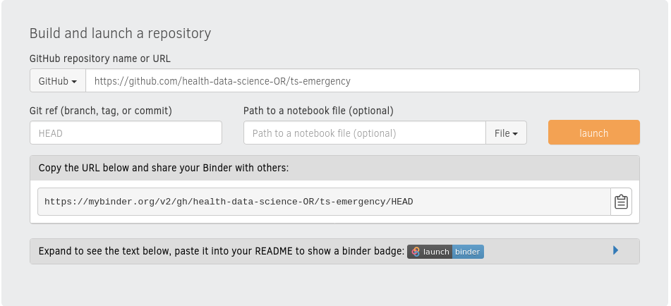

BinderHub¶
I want to briefly teach you about another neat way to share your work via BinderHub. It is an approach that I use nearly all the time in my work. In fact I often go a lot further to make my code runnable by others, but Binder is always my default.
What I like about BinderHub is that is is very simple and elegant solution to sharing scientific work that is integrated to cloud based version control (such as GitHub and GitLab), and Jupyter Notebooks. It also forces you to implement a reproducible python environment (I like this a lot). The public BinderHub does have it limitations in terms of compute (as you should expect), but I’m confident you will think it is fantastic, and like me, you will use it all the time.
What is BinderHub¶
To put it in simple terms: BinderHub provides you a Jupyter like environment in the cloud that others can use to run your code in a linked repository from GitHub (or GitLab!). Before we talk a little more about how this works let’s consider a couple of use cases:
Use case 1: previewing packages for potential users¶
Let’s say, for example, that you have developed a local python package to augment datasets of MRI images. BinderHub makes it easy for potential users of your package to test it out without going through any installation, source, or dependency management. One way to achieve that would be to provide one or more Jupyter notebooks in a GitHub repo that demonstrates your package’s capabilities using public MRI images. Using BinderHub, potential users access the repository, including package source code, and example notebook via a URL. Like magic the notebook “just runs!”. Whats more it is interactive, just like a normal notebook, and users can edit the code and see its effect. This is far more effective (and fun!) than documentation alone.
Use case 2: sharing runnable code with an organisation that cannot run python!¶
Believe it or not there are many organisations that worry about IT and IT security. Python and other free and open software are sometimes viewed with suspicion by IT departments and cannot be installed on a collaborators machine. For example, I have previously encountered problems with collaborating with the UK’s National Health Service (NHS) on research projects. It’s nearly always good to show your workings with collaborators, and BinderHub allows them to view where particular charts or tables come from without the need to install anything locally.
“Excel is a statistical analysis package; you should use that instead”
I’m going to be quite blunt that I don’t really like using Excel for data science and particularly for sharing models. But I do appreciate the difficulty some organisations face (particularly public sector) in adopting culture of open science and sharing. Free and open solutions are often viewed through the lens of suspicion, IT security, and loss of centralised corporate control. Indeed, I can vividly recall a conversation with an IT manager about my request to install R on my UK government issued laptop to enable me to code a model. After his blood pressure returned to normal, and a he stopped giving me a look that made me feel like I said something very inappropriate, I was told that the corporate approach is to use Excel. Indeed to quote him ‘Excel is a statistical analysis software’. Excel is a lot of things, but it definitely isn’t statistical analysis software. But a far worse crime is that it is the most dreadful way to share scientific models, algorithms, analysis and manage dependencies. Try writing a data science solution for the NHS in Excel. I guarantee it will either break due to a dependency issue or versioning problem within a short space of time (if not immediately).
Use case 3: making the results of a publication repeatable¶
In science, particularly within computational science, there’s a lofty concept called the reproducibility crisis. In academic language this is a problem with understanding how results of a particular study were generated, and an inability to (fully) reproduce (repeat) the results with the same code and data. In lay terms it means that most academic authors write a nicely crafted paper that doesn’t manage to fully reveal how they got the figures they reported in their earth shattering data science study. There’s nothing sinister going on here. To be clear, most modern data science projects are complicated - there’s lots of moving parts in machine learning! - and writing up a brief summary of methods usually doesn’t help anyone that wants to reuse, needs to verify, or is just interested in understanding how it all really worked. A more open way of working is important, even if it it can’t fully reproduce the results of a study due to data confidentiality. In some cases it might reveals mistakes. For example, in the UK there has been a lot of debate about the value of following a policy of austerity on the economy. A policy of austerity was strongly supported by results in a paper called ‘Growth in the time of debt’. Well… it was until three years later a bright student attempted to replicate the analysis using his own materials and couldn’t obtain anywhere near the same results. The student chased the authors who, to their credit, shared their Excel spreadsheet (the horror) containing the analysis. Cutting a long story short, the bright student found that the original authors had used the wrong column of data in their analysis leading to an erroneous conclusion about the magnitude of the benefit of austerity on economic growth (did I say data science was complicated? Well in this case not really, but mistakes still crept in).
Now imagine a world where a data scientist could pin point the austerity coding mistake at review time and rectify it quickly. BinderHub would have made this simplicity itself. In fact, if the authors had used a friendly data science language like Python, Julia or R to share their work I’m confident they wouldn’t have made the mistake they did. Calculations are far easier to verify in a language such as Python than in Excel.
BinderHub implementation¶
The more complex your data science study or software the more complex it becomes for others to install it. This “installation” problem is not unique and has been a major problem in the software industry. BinderHub makes use of a fantastic deployment tool that solves the installation problem called a docker container. A container packages up code and all of its dependencies so that a model can run in another computing environment. Its worth noting that you don’t get full control in BinderHub as if you had used docker directly, but it is still pretty fantastic (and simpler). As an example, consider an algorithm that was developed using using python 3.8.8, numpy 1.20.0, and pandas 1.3.1. BinderHub builds a docker image, using a linux OS, and includes the exact versions of code (+ any other dependencies) needed.
An example using BinderHub¶
Consider the ts_emergency package we developed in the local python package chapter. This is hosted on GitHub. If you navigate to the main repo page and scroll down to the README.md file display you will notice the following badge link.

This badge is just a link to the following mybinder url:
If you click on the launch Binder badge you will be taken to a online version of the repo. This will take a few seconds to build and load. You can watch the build stages online to understand what it is doing if you are interested. Once built you can navigate the repo, view the package and importantly can open example.ipynb and run and edit the code remotely. Note that any changes you make are not saved back to GitHub. Try is an enjoy the magic!
Using BinderHub¶
The ts_emergency repo is structured as follows:
ts_emergency
├── binder
│ └── environment.yml
├── example.ipynb
├── LICENSE
├── README.md
└── ts_emergency
├── data
│ ├── syn_ts_ed_long.csv
│ └── syn_ts_ed_wide.csv
├── datasets.py
├── __init__.py
├── plotting.py
The critical part to getting your repo to work with BinderHub is binder/environment.yml. A file with the .yml extension contains the a list of dependencies within the conda virtual environment for your code. .yml is a shorthand for .yaml (YAML = YAML ain’t markup language). To get your code to work with BinderHub make sure you use the .yml extension. Here is the code listing for binder/environment.yml
name: hds_ts
channels:
- defaults
- conda-forge
dependencies:
- jupyterlab=3.1.4
- matplotlib=3.4.2
- numpy=1.20.3
- pandas=1.3.1
- python=3.8.8
name: The name of the conda environment (doesn’t really matter what you choose; hds_ts = health data science time series)
channels: where should conda look (in order) for dependencies. Typically these are
default(anaconda) andconda-forge.dependencies: the list of python dependencies your code requires. Version number is optional, but I prefer to use it.
If you know what you are doing you can also use a pip style
requirements.txtin place ofenvironment.yml
Commit binderhub to your GitHub repo. Then select and copy the URL of your GitHub repo. In this case it is:
You can now navigate to https://mybinder.org

For basic use all you need to do is paste the URL of your repo into the corresponding text box. If you are using another service such as GitLab make sure you select it from the dropdown list.

There’s two tasks remaining. Click on launch - this starts the build process for the first time. This will take a few minutes the first time you do it for a repository. While this is building I usually copy the markdown for the badge and paste it at the top of my README.md.. Once this is committed to the repo anyone who has the URL (for example via a publication) can easily launch, run and interactively explore your code. In this case:
[](https://mybinder.org/v2/gh/health-data-science-OR/ts-emergency/HEAD)
Limitations of Binder¶
BinderHub is a free service. The providers are fantastic, but money and resource are not infinite. So you should not expect a great deal of computational power or memory available. For big data projects or extremely computationally expensive ones you might find it doesn’t meet your needs. If your code relies heavily on parallel processing you will encounter some performance issues. Still for many applications it is one of the most useful tools for sharing of health data science.